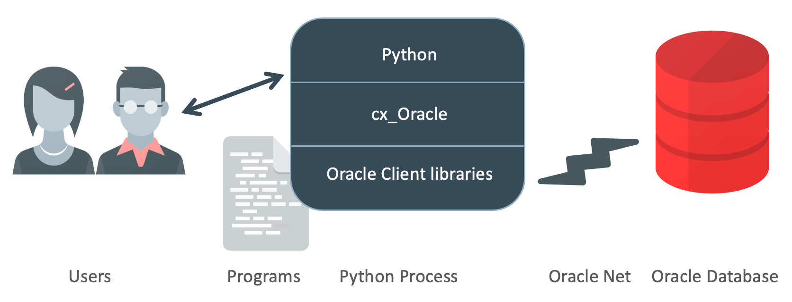
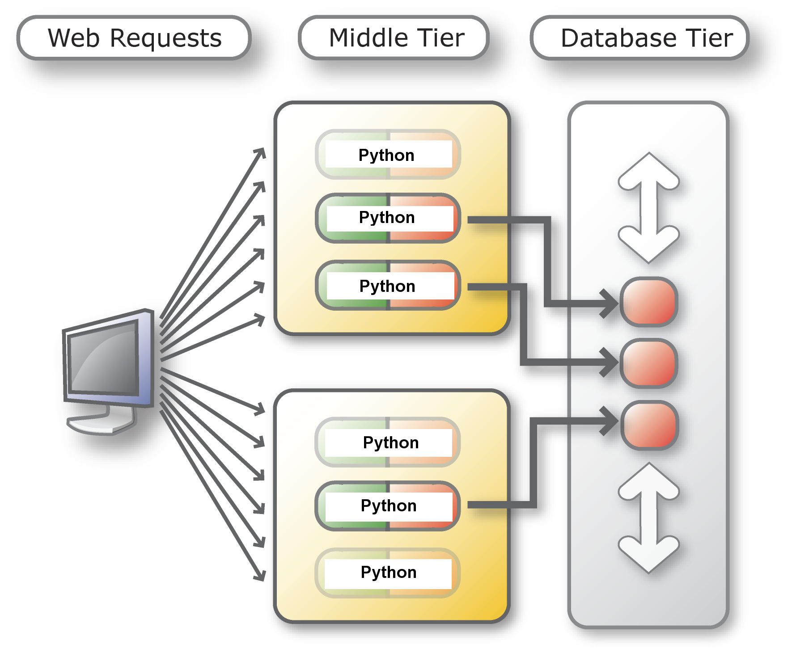

This tutorial is an introduction to using Python with Oracle Database. It
contains beginner and advanced material. Sections can be done in any order.
Choose the content that interests you and your skill level. The tutorial has
scripts to run and modify, and has suggested solutions.
Python is a popular general purpose dynamic scripting language. The
cx_Oracle interface provides the Python API to access Oracle Database.
If you are new to Python review the Appendix:
Python Primer to gain an understanding of the language.
When you have finished this tutorial, we recommend reviewing the cx_Oracle
documention.
The master copy of these instructions that you are reading is here.
Python programs call cx_Oracle functions. Internally cx_Oracle dynamically
loads Oracle Client libraries to access Oracle Database. The database can be
on the same machine as Python, or it can be remote. If the database is local,
the client libraries from the Oracle Database software installation can be
used.

-
Install software
To get going, follow either of the quick start instructions:
For this tutorial, you will need Python 3.6 (or later), cx_Oracle 7.3 (or later), and access to Oracle Database.
The Advanced Queuing section requires Python cx_Oracle to be using
Oracle client libraries 12.2 or later. The SODA section requires Oracle
Database 18 or later, and Python cx_Oracle must be using Oracle libraries
from 18.5, or later.
-
Download the tutorial scripts
The Python scripts used in this example are in the cx_Oracle GitHub repository.
Download a zip file of the repository from here and unzip it. Alternatively you can use 'git' to clone the repository with git clone https://github.com/oracle/python-cx_Oracle.git
The samples/tutorial directory has scripts to run and
modify. The samples/tutorial/solutions directory has scripts
with suggested code changes.
Create a database user
If you have an existing user, you may be able to use it for most
examples (some examples may require extra permissions).
If you need to create a new user, review the grants created in
samples/tutorial/sql/create_user.sql. Then open a terminal
window, change to the samples/tutorial/sql directory, and
run the create_user.sql script as the SYSTEM user, for
example:
cd samples/tutorial/sql
sqlplus -l system/systempassword@localhost/orclpdb1 @create_user
The example above connects as the SYSTEM user. The connection
string is "localhost/orclpdb1", meaning use the database service
"orclpdb1" running on localhost (the computer you are running SQL*Plus
on). Substitute values for your environment. If you are using Oracle
Autonomous Database, use the ADMIN user instead of SYSTEM.
When the tutorial is finished, the drop_user.sql script
in the same directory can be used to remove the tutorial user.
Install the sample tables
Once you have a database user, then you can create the tutorial
tables by running a command like this, using your values for the
tutorial username, password and connection string:
sqlplus -l pythonhol/welcome@localhost/orclpdb1 @setup_tables
Start the Database Resident Connection Pool (DRCP)
If you want to try the DRCP examples in section 2, start the DRCP
pool. (The pool is already started in Oracle Autonomous Database).
Run SQL*Plus with SYSDBA privileges, for example:
sqlplus -l sys/syspassword@localhost/orclcdb as sysdba
and execute the command:
execute dbms_connection_pool.start_pool()
Note you may need to do this in the container database, not a pluggable database.
-
Review the connection credentials used by the tutorial scripts
Review db_config.py and db_config.sql in
the tutorial directory. These are included in other
Python and SQL files.
Edit db_config.py and change the default values to
match the connection information for your environment. Alternatively
you can set the given envionment variables in your terminal
window. For example, the default username is "pythonhol" unless the
envionment variable "PYTHON_USER" contains a different username. The
default connection string is for the 'orclpdb1' database service on
the same machine as Python. (In Python Database API terminology, the
connection string parameter is called the "data source name", or
"dsn".) Using envionment variables is convenient because you will not
be asked to re-enter the password when you run scripts:
user = os.environ.get("PYTHON_USER", "pythonhol")
dsn = os.environ.get("PYTHON_CONNECT_STRING", "localhost/orclpdb1")
pw = os.environ.get("PYTHON_PASSWORD")
if pw is None:
pw = getpass.getpass("Enter password for %s: " % user)
Also change the default username and connection string in the SQL*Plus
configuration file db_config.sql:
-- Default database username
def user = "pythonhol"
-- Default database connection string
def connect_string = "localhost/orclpdb1"
-- Prompt for the password
accept pw char prompt 'Enter database password for &user: ' hide
The tutorial instructions may need adjusting, depending on how you
have set up your environment.
-
Review the Instant Client library path
Review the Oracle Client library path settings in
db_config.py. If cx_Oracle cannot locate Oracle Client
libraries, then your applications will fail with an error like
"DPI-1047: Cannot locate a 64-bit Oracle Client library".
# On Linux this must be None.
# Instead, the Oracle environment must be set before Python starts.
instant_client_dir = None
# On Windows, if your database is on the same machine, comment these lines out
# and let instant_client_dir be None. Otherwise, set this to your Instant
# Client directory. Note the use of the raw string r"..." so backslashes can
# be used as directory separators.
if sys.platform.startswith("win"):
instant_client_dir = r"c:\oracle\instantclient_19_10"
# On macOS (Intel x86) set the directory to your Instant Client directory
if sys.platform.startswith("darwin"):
instant_client_dir = os.environ.get("HOME")+"/Downloads/instantclient_19_8"
# This can be called at most once per process.
if instant_client_dir is not None:
cx_Oracle.init_oracle_client(lib_dir=instant_client_dir)
Set instant_client_dir to None or to a
valid path according to the following notes:
-
If you are on macOS or Windows, and you have installed Oracle
Instant Client libraries because your database is on a remote
machine, then set instant_client_dir to the path of
the Instant Client libraries.
-
If you are on Windows and have a local database installed, then
comment out the two Windows lines, so that
instant_client_dir remains None.
-
In all other cases (including Linux with Oracle Instant
Client), make sure that instant_client_dir is set to
None. In these cases you must make sure that the
Oracle libraries from Instant Client or your ORACLE_HOME are in
your system library search path before you start Python. On Linux,
the path can be configured with ldconfig or with the
LD_LIBRARY_PATH environment variables.
You can connect from Python to a local, remote or cloud database. Documentation
link for further reading: Connecting to Oracle Database.
-
1.1 Creating a basic connection
Review the code contained in connect.py:
import cx_Oracle
import db_config
con = cx_Oracle.connect(db_config.user, db_config.pw, db_config.dsn)
print("Database version:", con.version)
The cx_Oracle module is imported to provide the API for accessing
the Oracle database. Many inbuilt and third party modules can be
included in Python scripts this way.
The connect() method is passed the username, the
password and the connection string that you configured in the
db_config.py module. In this case, Oracle's Easy Connect connection
string syntax is used. It consists of the hostname of your machine,
localhost, and the database service name
orclpdb1. (In Python Database API terminology, the
connection string parameter is called the "data source name", or
"dsn".)
Open a command terminal and change to the tutorial directory:
cd samples/tutorial
Run the Python script:
python connect.py
The version number of the database should be displayed. An
exception is raised if the connection fails. Adjust the username,
password or connection string parameters to invalid values to see the
exception.
cx_Oracle also supports "external authentication", which allows
connections without needing usernames and passwords to be embedded in
the code. Authentication would then instead be performed by, for
example, LDAP or Oracle Wallets.
-
1.2 Indentation indicates code structure
There are no statement terminators or begin/end keywords
or braces to indicate blocks of code.
Open connect.py in an editor. Indent the
print statement with some spaces:
import cx_Oracle
import db_config
con = cx_Oracle.connect(db_config.user, db_config.pw, db_config.dsn)
print("Database version:", con.version)
Save the script and run it again:
python connect.py
This raises an exception about the indentation. The
number of spaces or tabs must be consistent in each block;
otherwise, the Python interpreter will either raise an
exception or execute code unexpectedly.
Python may not always be able to identify accidental
from deliberate indentation. Check your indentation is
correct before running each example. Make sure to indent
all statement blocks equally. Note the sample files
use spaces, not tabs.
-
1.3 Executing a query
Open query.py in an editor. It looks like:
import cx_Oracle
import db_config
con = cx_Oracle.connect(db_config.user, db_config.pw, db_config.dsn)
Edit the file and add the code shown in bold below:
import cx_Oracle
import db_config
con = cx_Oracle.connect(db_config.user, db_config.pw, db_config.dsn)
cur = con.cursor()
cur.execute("select * from dept order by deptno")
res = cur.fetchall()
for row in res:
print(row)
Make sure the print(row) line is indented. This lab uses spaces, not tabs.
The code executes a query and fetches all data.
Save the file and run it:
python query.py
In each loop iteration a new row is stored in
row as a Python "tuple" and is displayed.
Fetching data is described further in section 3.
-
1.4 Closing connections
Connections and other resources used by cx_Oracle will
automatically be closed at the end of scope. This is a
common programming style that takes care of the correct
order of resource closure.
Resources can also be explicitly closed to free up database
resources if they are no longer needed. This is strongly recommended
in blocks of code that remain active for some time.
Open query.py in an editor and add calls to
close the cursor and connection like:
import cx_Oracle
import db_config
con = cx_Oracle.connect(db_config.user, db_config.pw, db_config.dsn)
cur = con.cursor()
cur.execute("select * from dept order by deptno")
res = cur.fetchall()
for row in res:
print(row)
cur.close()
con.close()
Running the script completes without error:
python query.py
If you swap the order of the two close() calls you will see an error.
-
1.5 Checking versions
Review the code contained in versions.py:
import cx_Oracle
import db_config
con = cx_Oracle.connect(db_config.user, db_config.pw, db_config.dsn)
print(cx_Oracle.version)
Run the script:
python versions.py
This gives the version of the cx_Oracle interface.
Edit the file to print the version of the database, and of the Oracle client libraries used by cx_Oracle:
import cx_Oracle
import db_config
con = cx_Oracle.connect(db_config.user, db_config.pw, db_config.dsn)
print(cx_Oracle.version)
print("Database version:", con.version)
print("Client version:", cx_Oracle.clientversion())
When the script is run, it will display:
7.1.0
Database version: 19.3.0.0.0
Client version: (19, 8, 0, 0, 0)
Note the client version is a tuple.
Any cx_Oracle installation can connect to older and newer
Oracle Database versions. By checking the Oracle Database
and client versions numbers, the application can make use of
the best Oracle features available.
Connection pooling is important for performance in when multi-threaded
applications frequently connect and disconnect from the database. Pooling
also gives the best support for Oracle high availability features.
Documentation link for further reading: Connection Pooling.
-
2.1 Connection pooling
Review the code contained in connect_pool.py:
import cx_Oracle
import threading
import db_config
pool = cx_Oracle.SessionPool(db_config.user, db_config.pw, db_config.dsn,
min = 2, max = 5, increment = 1, threaded = True,
getmode = cx_Oracle.SPOOL_ATTRVAL_WAIT)
def Query():
con = pool.acquire()
cur = con.cursor()
for i in range(4):
cur.execute("select myseq.nextval from dual")
seqval, = cur.fetchone()
print("Thread", threading.current_thread().name, "fetched sequence =", seqval)
thread1 = threading.Thread(name='#1', target=Query)
thread1.start()
thread2 = threading.Thread(name='#2', target=Query)
thread2.start()
thread1.join()
thread2.join()
print("All done!")
The SessionPool() function creates a pool of
Oracle connections for the user. Connections in the pool can
be used by cx_Oracle by calling pool.acquire().
The initial pool size is 2 connections. The maximum size is 5
connections. When the pool needs to grow, then 1 new connection
will be created at a time. The pool can shrink back to the
minimum size of 2 when connections are no longer in use.
The def Query(): line creates a method that
is called by each thread.
In the method, the pool.acquire() call gets
one connection from the pool (as long as less than 5 are
already in use). This connection is used in a loop of 4
iterations to query the sequence myseq. At the
end of the method, cx_Oracle will automatically close the
cursor and release the connection back to the pool for
reuse.
The seqval, = cur.fetchone() line fetches a
row and puts the single value contained in the result tuple
into the variable seqval. Without the comma,
the value in seqval would be a tuple like
"(1,)".
Two threads are created, each invoking the
Query() method.
In a command terminal, run:
python connect_pool.py
The output shows interleaved query results as each thread fetches
values independently. The order of interleaving may vary from run to
run.
-
2.2 Connection pool experiments
Review connect_pool2.py, which has a loop for the number
of threads, each iteration invoking the Query() method:
import cx_Oracle
import threading
import db_config
pool = cx_Oracle.SessionPool(db_config.user, db_config.pw, db_config.dsn,
min = 2, max = 5, increment = 1, threaded = True,
getmode = cx_Oracle.SPOOL_ATTRVAL_WAIT)
def Query():
con = pool.acquire()
cur = con.cursor()
for i in range(4):
cur.execute("select myseq.nextval from dual")
seqval, = cur.fetchone()
print("Thread", threading.current_thread().name, "fetched sequence =", seqval)
numberOfThreads = 2
threadArray = []
for i in range(numberOfThreads):
thread = threading.Thread(name = '#' + str(i), target = Query)
threadArray.append(thread)
thread.start()
for t in threadArray:
t.join()
print("All done!")
In a command terminal, run:
python connect_pool2.py
Experiment with different values of the pool parameters and
numberOfThreads. Larger initial pool sizes will make the pool
creation slower, but the connections will be available immediately when needed.
Try changing getmode to
cx_Oracle.SPOOL_ATTRVAL_NOWAIT. When numberOfThreads
exceeds the maximum size of the pool, the acquire() call will now
generate an error such as "ORA-24459: OCISessionGet() timed out waiting for pool
to create new connections".
Pool configurations where min is the same as
max (and increment = 0) are often
recommended as a best practice. This avoids connection storms on the
database server.
-
2.3 Creating a DRCP Connection
Database Resident Connection Pooling allows multiple Python
processes on multiple machines to share a small pool of database
server processes.
Below left is a diagram without DRCP. Every application standalone
connection (or cx_Oracle connection-pool connection) has its own database
server process. Standalone application connect() and close calls
require the expensive create and destroy of those database server processes.
cx_Oracle connection pools reduce these costs by keeping database server
processes open, but every cx_Oracle connection pool will requires its own set
of database server processes, even if they are not doing database work: these
idle server processes consumes database host resources. Below right is a
diagram with DRCP. Scripts and Python processes can share database servers
from a precreated pool of servers and return them when they are not in use.

|

|
DRCP is useful when the database host machine does not have enough memory
to handle the number of database server processes required. If DRCP is
enabled, it is best used in conjunction with cx_Oracle's connection pooling.
However, if the database host memory is large enough, then the default,
'dedicated' server process model is generally recommended. This can be with
or without a cx_Oracle connection pool, depending on the connection rate.
Batch scripts doing long running jobs should generally use
dedicated connections. Both dedicated and DRCP servers can be used
together in the same application or database.
Review the code contained in connect_drcp.py:
import cx_Oracle
import db_config
con = cx_Oracle.connect(db_config.user, db_config.pw, db_config.dsn + ":pooled",
cclass="PYTHONHOL", purity=cx_Oracle.ATTR_PURITY_SELF)
print("Database version:", con.version)
This is similar to connect.py but
":pooled" is appended to the connection string, telling
the database to use a pooled server. A Connection Class "PYTHONHOL" is also
passed into the connect() method to allow grouping of database
servers to applications. Note with Autonomous Database, the connection string
has a different form, see the ADB documentation.
The "purity" of the connection is defined as the
ATTR_PURITY_SELF constant, meaning the session state
(such as the default date format) might be retained between
connection calls, giving performance benefits. Session information
will be discarded if a pooled server is later reused by an
application with a different connection class name.
Applications that should never share session information should
use a different connection class and/or use
ATTR_PURITY_NEW to force creation of a new
session. This reduces overall scalability but prevents applications
mis-using session information.
Run connect_drcp.py in a terminal window.
python connect_drcp.py
The output is simply the version of the database.
-
2.4 Connection pooling and DRCP
DRCP works well with cx_Oracle's connection pooling.
Edit connect_pool2.py, reset any changed pool options, and modify it to use DRCP:
import cx_Oracle
import threading
pool = cx_Oracle.SessionPool(db_config.user, db_config.pw, db_config.dsn + ":pooled",
min = 2, max = 5, increment = 1, threaded = True,
getmode = cx_Oracle.SPOOL_ATTRVAL_WAIT)
def Query():
con = pool.acquire(cclass = "PYTHONHOL", purity = cx_Oracle.ATTR_PURITY_SELF)
cur = conn.cursor()
for i in range(4):
cur.execute("select myseq.nextval from dual")
seqval, = cur.fetchone()
print("Thread", threading.current_thread().name, "fetched sequence =", seqval)
numberOfThreads = 2
threadArray = []
for i in range(numberOfThreads):
thread = threading.Thread(name = '#' + str(i), target = Query)
threadArray.append(thread)
thread.start()
for t in threadArray:
t.join()
print("All done!")
The script logic does not need to be changed to benefit from
DRCP connection pooling.
Run the script:
python connect_pool2.py
Review drcp_query.sql and set the connection string to
your database. Then open a new a terminal window and invoke SQL*Plus:
sqlplus /nolog @drcp_query.sql
This will prompt for the SYSTEM password and the database connection
string. With Pluggable databases, you will need to connect to the
container database. Note that with ADB, this view does not contain
rows, so running this script is not useful.
For other databases, the script shows the number of connection requests
made to the pool since the database was started ("NUM_REQUESTS"), how many
of those reused a pooled server's session ("NUM_HITS"), and how many had
to create new sessions ("NUM_MISSES"). Typically the goal is a low number
of misses.
To see the pool configuration you can query DBA_CPOOL_INFO.
-
2.5 More DRCP investigation
To explore the behaviors of cx_Oracle connection pooling and DRCP pooling futher,
you could try changing the purity to
cx_Oracle.ATTR_PURITY_NEW to see the effect on the
DRCP NUM_MISSES statistic.
Another experiement is to include the time module at the file
top:
import time
and add calls to time.sleep(1) in the code, for
example in the query loop. Then look at the way the threads execute. Use
drcp_query.sql to monitor the pool's behavior.
Executing SELECT queries is the primary way to get data from Oracle
Database. Documentation link for further reading: SQL Queries.
3.1 A simple query
There are a number of functions you can use to query an Oracle
database, but the basics of querying are always the same:
1. Execute the statement.
2. Bind data values (optional).
3. Fetch the results from the database.
Review the code contained in query2.py:
import cx_Oracle
import db_config
con = cx_Oracle.connect(db_config.user, db_config.pw, db_config.dsn)
cur = con.cursor()
cur.execute("select * from dept order by deptno")
for deptno, dname, loc in cur:
print("Department number: ", deptno)
print("Department name: ", dname)
print("Department location:", loc)
The cursor() method opens a cursor for statements to use.
The execute() method parses and executes the statement.
The loop fetches each row from the cursor and unpacks the returned
tuple into the variables deptno, dname,
loc, which are then printed.
Run the script in a terminal window:
python query2.py
The output is:
Department number: 10
Department name: ACCOUNTING
Department location: NEW YORK
Department number: 20
Department name: RESEARCH
Department location: DALLAS
Department number: 30
Department name: SALES
Department location: CHICAGO
Department number: 40
Department name: OPERATIONS
Department location: BOSTON
3.2 Using fetchone()
When the number of rows is large, the fetchall()
call may use too much memory.
Review the code contained in query_one.py:
import cx_Oracle
import db_config
con = cx_Oracle.connect(db_config.user, db_config.pw, db_config.dsn)
cur = con.cursor()
cur.execute("select * from dept order by deptno")
row = cur.fetchone()
print(row)
row = cur.fetchone()
print(row)
This uses the fetchone() method to return just a single row as a
tuple. When called multiple time, consecutive rows are returned:
Run the script in a terminal window:
python query_one.py
The first two rows of the table are printed.
3.3 Using fetchmany()
Review the code contained in query_many.py:
import cx_Oracle
import db_config
con = cx_Oracle.connect(db_config.user, db_config.pw, db_config.dsn)
cur = con.cursor()
cur.execute("select * from dept order by deptno")
res = cur.fetchmany(numRows = 3)
print(res)
The fetchmany() method returns a list of tuples. By
default the number of rows returned is specified by the cursor
attribute arraysize (which defaults to 100). Here the
numRows parameter specifies that three rows should be
returned.
Run the script in a terminal window:
python query_many.py
The first three rows of the table are returned as a list
(Python's name for an array) of tuples.
You can access elements of the lists by position indexes. To see this,
edit the file and add:
print(res[0]) # first row
print(res[0][1]) # second element of first row
3.4 Scrollable cursors
Scrollable cursors enable the application to move backwards as
well as forwards in query results. They can be used to skip rows
as well as move to a particular row.
Review the code contained in query_scroll.py:
import cx_Oracle
import db_config
con = cx_Oracle.connect(db_config.user, db_config.pw, db_config.dsn)
cur = con.cursor(scrollable = True)
cur.execute("select * from dept order by deptno")
cur.scroll(2, mode = "absolute") # go to second row
print(cur.fetchone())
cur.scroll(-1) # go back one row
print(cur.fetchone())
Run the script in a terminal window:
python query_scroll.py
Edit query_scroll.py and experiment with different
scroll options and orders, such as:
cur.scroll(1) # go to next row
print(cur.fetchone())
cur.scroll(mode = "first") # go to first row
print(cur.fetchone())
Try some scroll options that go beyond the number of rows in
the resultset.
3.5 Tuning with arraysize and prefetchrows
This section demonstrates a way to improve query performance by increasing
the number of rows returned in each batch from Oracle to the Python
program.
Row prefetching and array fetching are both internal buffering techniques
to reduce round-trips to the database. The difference is the code layer that
is doing the buffering, and when the buffering occurs.
First, create a table with a large number of rows.
Review query_arraysize.sql:
create table bigtab (mycol varchar2(20));
begin
for i in 1..20000
loop
insert into bigtab (mycol) values (dbms_random.string('A',20));
end loop;
end;
/
show errors
commit;
In a terminal window run the script as:
sqlplus /nolog @query_arraysize.sql
Review the code contained in query_arraysize.py:
import cx_Oracle
import time
import db_config
con = cx_Oracle.connect(db_config.user, db_config.pw, db_config.dsn)
start = time.time()
cur = con.cursor()
cur.prefetchrows = 100
cur.arraysize = 100
cur.execute("select * from bigtab")
res = cur.fetchall()
# print(res) # uncomment to display the query results
elapsed = (time.time() - start)
print(elapsed, "seconds")
This uses the 'time' module to measure elapsed time of the query. The
prefetchrows and arraysize values are 100. This causes batches of 100
records at a time to be returned from the database to a cache in Python.
These values can be tuned to reduce the number of "round-trips"
made to the database, often reducing network load and reducing the number of
context switches on the database server. The fetchone(),
fetchmany() and fetchall() methods will read from
the cache before requesting more data from the database.
In a terminal window, run:
python query_arraysize.py
Rerun a few times to see the average times.
Experiment with different prefetchrows and arraysize values. For
example, edit query_arraysize.py and change the arraysize
to:
cur.arraysize = 2000
Rerun the script to compare the performance of different
arraysize settings.
In general, larger array sizes improve performance. Depending on how
fast your system is, you may need to use different values than those
given here to see a meaningful time difference.
There is a time/space tradeoff for increasing the values. Larger values
will require more memory in Python for buffering the records.
If you know the query returns a fixed number of rows, for example 20
rows, then set arraysize to 20 and prefetchrows to 21. The addition of one
for prefetchrows prevents a round-trip to check for end-of-fetch. The
statement execution and fetch will take a total of one round-trip. This
minimizes load on the database.
If you know a query only returns a few records,
decrease the arraysize from the default to reduce memory
usage.
Bind variables enable you to re-execute statements with new data values
without the overhead of re-parsing the statement. Binding improves code
reusability, improves application scalability, and can reduce the risk of SQL
injection attacks. Using bind variables is strongly recommended.
Documentation link for further reading: Using
Bind Variables.
4.1 Binding in queries
Review the code contained in bind_query.py:
import cx_Oracle
import db_config
con = cx_Oracle.connect(db_config.user, db_config.pw, db_config.dsn)
cur = con.cursor()
sql = "select * from dept where deptno = :id order by deptno"
cur.execute(sql, id = 20)
res = cur.fetchall()
print(res)
cur.execute(sql, id = 10)
res = cur.fetchall()
print(res)
The statement contains a bind variable ":id" placeholder.
The statement is executed twice with different values for the
WHERE clause.
From a terminal window, run:
python bind_query.py
The output shows the details for the two departments.
An arbitrary number of named arguments can be used in an
execute() call. Each argument name must match a bind
variable name. Alternatively, instead of passing multiple arguments you
could pass a second argument to execute() that is a sequence
or a dictionary. Later examples show these syntaxes.
To bind a database NULL, use the Python value None
cx_Oracle uses Oracle Database's Statement Cache. As long as the
statement you pass to execute() is in that cache, you can use
different bind values and still avoid a full statement parse. The
statement cache size is configurable for each connection. To see the
default statement cache size, edit bind_query.py and add a
line at the end:
print(con.stmtcachesize)
Re-run the file.
In your applications you would set the statement cache size to the
number of unique statements commonly executed.
4.2 Binding in inserts
Review the code in bind_insert.sql creating a table
for inserting data:
create table mytab (id number, data varchar2(20), constraint my_pk primary key (id));
Run the script as:
sqlplus /nolog @bind_insert.sql
Review the code contained in bind_insert.py:
import cx_Oracle
import db_config
con = cx_Oracle.connect(db_config.user, db_config.pw, db_config.dsn)
cur = con.cursor()
rows = [ (1, "First" ), (2, "Second" ),
(3, "Third" ), (4, "Fourth" ),
(5, "Fifth" ), (6, "Sixth" ),
(7, "Seventh" ) ]
cur.executemany("insert into mytab(id, data) values (:1, :2)", rows)
# Now query the results back
cur2 = con.cursor()
cur2.execute('select * from mytab')
res = cur2.fetchall()
print(res)
The 'rows' array contains the data to be inserted.
The executemany() call inserts all rows. This
call uses "array binding", which is an efficient way to
insert multiple records.
The final part of the script queries the results back and displays them as a list of tuples.
From a terminal window, run:
python bind_insert.py
The new results are automatically rolled back at the end of
the script so re-running it will always show the same number of
rows in the table.
4.3 Batcherrors
The Batcherrors features allows invalid data to be identified
while allowing valid data to be inserted.
Edit the data values in bind_insert.py and
create a row with a duplicate key:
rows = [ (1, "First" ), (2, "Second" ),
(3, "Third" ), (4, "Fourth" ),
(5, "Fifth" ), (6, "Sixth" ),
(6, "Duplicate" ),
(7, "Seventh" ) ]
From a terminal window, run:
python bind_insert.py
The duplicate generates the error "ORA-00001: unique
constraint (PYTHONHOL.MY_PK) violated". The data is rolled back
and the query returns no rows.
Edit the file again and enable batcherrors like:
import cx_Oracle
import db_config
con = cx_Oracle.connect(db_config.user, db_config.pw, db_config.dsn)
cur = con.cursor()
rows = [ (1, "First" ), (2, "Second" ),
(3, "Third" ), (4, "Fourth" ),
(5, "Fifth" ), (6, "Sixth" ),
(6, "Duplicate" ),
(7, "Seventh" ) ]
cur.executemany("insert into mytab(id, data) values (:1, :2)", rows, batcherrors = True)
for error in cur.getbatcherrors():
print("Error", error.message.rstrip(), "at row offset", error.offset)
# Now query the results back
cur2 = con.cursor()
cur2.execute('select * from mytab')
res = cur2.fetchall()
print(res)
Run the file:
python bind_insert.py
The new code shows the offending duplicate row: "ORA-00001:
unique constraint (PYTHONHOL.MY_PK) violated at row offset 6".
This indicates the 6th data value (counting from 0) had a
problem.
The other data gets inserted and is queried back.
At the end of the script, cx_Oracle will roll back an uncommitted transaction. If you want to commit results, you can use:
con.commit()
To force cx_Oracle to roll back, use:
con.rollback()
4.4 Binding named objects
cx_Oracle can fetch and bind named object types such as Oracle's
Spatial Data Objects (SDO).
In a terminal window, start SQL*Plus using the lab credentials and connection string, such as:
sqlplus -l pythonhol/welcome@localhost/orclpdb1
Use the SQL*Plus DESCRIBE command to look at the SDO definition:
desc MDSYS.SDO_GEOMETRY
It contains various attributes and methods. The top level description is:
Name Null? Type
----------------------------------------- -------- ----------------------------
SDO_GTYPE NUMBER
SDO_SRID NUMBER
SDO_POINT MDSYS.SDO_POINT_TYPE
SDO_ELEM_INFO MDSYS.SDO_ELEM_INFO_ARRAY
SDO_ORDINATES MDSYS.SDO_ORDINATE_ARRAY
Review the code contained in bind_sdo.py:
import cx_Oracle
import db_config
con = cx_Oracle.connect(db_config.user, db_config.pw, db_config.dsn)
cur = con.cursor()
# Create table
cur.execute("""begin
execute immediate 'drop table testgeometry';
exception when others then
if sqlcode <> -942 then
raise;
end if;
end;""")
cur.execute("""create table testgeometry (
id number(9) not null,
geometry MDSYS.SDO_GEOMETRY not null)""")
# Create and populate Oracle objects
typeObj = con.gettype("MDSYS.SDO_GEOMETRY")
elementInfoTypeObj = con.gettype("MDSYS.SDO_ELEM_INFO_ARRAY")
ordinateTypeObj = con.gettype("MDSYS.SDO_ORDINATE_ARRAY")
obj = typeObj.newobject()
obj.SDO_GTYPE = 2003
obj.SDO_ELEM_INFO = elementInfoTypeObj.newobject()
obj.SDO_ELEM_INFO.extend([1, 1003, 3])
obj.SDO_ORDINATES = ordinateTypeObj.newobject()
obj.SDO_ORDINATES.extend([1, 1, 5, 7])
print("Created object", obj)
# Add a new row
print("Adding row to table...")
cur.execute("insert into testgeometry values (1, :objbv)", objbv = obj)
print("Row added!")
# Query the row
print("Querying row just inserted...")
cur.execute("select id, geometry from testgeometry");
for row in cur:
print(row)
This uses gettype() to get the database types of the
SDO and its object attributes. The newobject() calls
create Python representations of those objects. The python object
atributes are then set. Oracle VARRAY types such as
SDO_ELEM_INFO_ARRAY are set with extend().
Run the file:
python bind_sdo.py
The new SDO is shown as an object, similar to:
(1, <cx_Oracle.Object MDSYS.SDO_GEOMETRY at 0x104a76230>)
To show the attribute values, edit the the query code section at
the end of the file. Add a new method that traverses the object. The
file below the existing comment "# (Change below here)")
should look like:
# (Change below here)
# Define a function to dump the contents of an Oracle object
def dumpobject(obj, prefix = " "):
if obj.type.iscollection:
print(prefix, "[")
for value in obj.aslist():
if isinstance(value, cx_Oracle.Object):
dumpobject(value, prefix + " ")
else:
print(prefix + " ", repr(value))
print(prefix, "]")
else:
print(prefix, "{")
for attr in obj.type.attributes:
value = getattr(obj, attr.name)
if isinstance(value, cx_Oracle.Object):
print(prefix + " " + attr.name + " :")
dumpobject(value, prefix + " ")
else:
print(prefix + " " + attr.name + " :", repr(value))
print(prefix, "}")
# Query the row
print("Querying row just inserted...")
cur.execute("select id, geometry from testgeometry")
for id, obj in cur:
print("Id: ", id)
dumpobject(obj)
Run the file again:
python bind_sdo.py
This shows
Querying row just inserted...
Id: 1
{
SDO_GTYPE : 2003
SDO_SRID : None
SDO_POINT : None
SDO_ELEM_INFO :
[
1
1003
3
]
SDO_ORDINATES :
[
1
1
5
7
]
}
To explore further, try setting the SDO attribute SDO_POINT, which
is of type SDO_POINT_TYPE.
The gettype() and newobject() methods can
also be used to bind PL/SQL Records and Collections.
Before deciding to use objects, review your performance goals because
working with scalar values can be faster.
PL/SQL is Oracle's procedural language extension to SQL. PL/SQL
procedures and functions are stored and run in the database. Using
PL/SQL lets all database applications reuse logic, no matter how the
application accesses the database. Many data-related operations can
be performed in PL/SQL faster than extracting the data into a
program (for example, Python) and then processing it. Documentation link
for further reading: PL/SQL Execution.
5.1 PL/SQL functions
Review plsql_func.sql which creates a PL/SQL
stored function myfunc() to insert a row into a new
table named ptab and return double the inserted
value:
create table ptab (mydata varchar(20), myid number);
create or replace function myfunc(d_p in varchar2, i_p in number) return number as
begin
insert into ptab (mydata, myid) values (d_p, i_p);
return (i_p * 2);
end;
/
Run the script using:
sqlplus /nolog @plsql_func.sql
Review the code contained in plsql_func.py:
import cx_Oracle
import db_config
con = cx_Oracle.connect(db_config.user, db_config.pw, db_config.dsn)
cur = con.cursor()
res = cur.callfunc('myfunc', int, ('abc', 2))
print(res)
This uses callfunc() to execute the function.
The second parameter is the type of the returned value. It should be one
of the types supported by cx_Oracle or one of the type constants defined
by cx_Oracle (such as cx_Oracle.NUMBER). The two PL/SQL function
parameters are passed as a tuple, binding them to the function parameter
arguments.
From a terminal window, run:
python plsql_func.py
The output is a result of the PL/SQL function calculation.
5.2 PL/SQL procedures
Review plsql_proc.sql which creates a PL/SQL procedure
myproc() to accept two parameters. The second parameter
contains an OUT return value.
create or replace procedure myproc(v1_p in number, v2_p out number) as
begin
v2_p := v1_p * 2;
end;
/
Run the script with:
sqlplus /nolog @plsql_proc.sql
Review the code contained in plsql_proc.py:
import cx_Oracle
import db_config
con = cx_Oracle.connect(db_config.user, db_config.pw, db_config.dsn)
cur = con.cursor()
myvar = cur.var(int)
cur.callproc('myproc', (123, myvar))
print(myvar.getvalue())
This creates an integer variable myvar to hold
the value returned by the PL/SQL OUT parameter. The input number
123 and the output variable name are bound to the procedure call
parameters using a tuple.
To call the PL/SQL procedure, the callproc()
method is used.
In a terminal window, run:
python plsql_proc.py
The getvalue() method displays the returned
value.
Type handlers enable applications to alter data that is fetched from, or sent
to, the database. Documentation links for further reading: Changing Fetched Data Types with Output Type Handlers and Changing Bind Data Types using an Input Type Handler.
-
6.1 Basic output type handler
Output type handlers enable applications to change how data
is fetched from the database. For example, numbers can be
returned as strings or decimal objects. LOBs can be returned as
string or bytes.
A type handler is enabled by setting the
outputtypehandler attribute on either a cursor or
the connection. If set on a cursor it only affects queries executed
by that cursor. If set on a connection it affects all queries executed
on cursors created by that connection.
Review the code contained in type_output.py:
import cx_Oracle
import db_config
con = cx_Oracle.connect(db_config.user, db_config.pw, db_config.dsn)
cur = con.cursor()
print("Standard output...")
for row in cur.execute("select * from dept"):
print(row)
In a terminal window, run:
python type_output.py
This shows the department number represented as digits like
10.
Add an output type handler to the bottom of the file:
def ReturnNumbersAsStrings(cursor, name, defaultType, size, precision, scale):
if defaultType == cx_Oracle.NUMBER:
return cursor.var(str, 9, cursor.arraysize)
print("Output type handler output...")
cur = con.cursor()
cur.outputtypehandler = ReturnNumbersAsStrings
for row in cur.execute("select * from dept"):
print(row)
This type handler converts any number columns to strings with
maxium size 9.
Run the script again:
python type_output.py
The new output shows the department numbers are now strings
within quotes like '10'.
6.2 Output type handlers and variable converters
When numbers are fetched from the database, the conversion
from Oracle's decimal representation to Python's binary format
may need careful handling. To avoid unexpected issues, the
general recommendation is to do number operations in SQL or
PL/SQL, or to use the decimal module in Python.
Output type handlers can be combined with variable converters
to change how data is fetched.
Review type_converter.py:
import cx_Oracle
import db_config
con = cx_Oracle.connect(db_config.user, db_config.pw, db_config.dsn)
cur = con.cursor()
for value, in cur.execute("select 0.1 from dual"):
print("Value:", value, "* 3 =", value * 3)
Run the file:
python type_converter.py
The output is like:
Value: 0.1 * 3 = 0.30000000000000004
Edit the file and add a type handler that uses a Python
decimal converter:
import cx_Oracle
import decimal
import db_config
con = cx_Oracle.connect(db_config.user, db_config.pw, db_config.dsn)
cur = con.cursor()
def ReturnNumbersAsDecimal(cursor, name, defaultType, size, precision, scale):
if defaultType == cx_Oracle.NUMBER:
return cursor.var(str, 9, cursor.arraysize, outconverter = decimal.Decimal)
cur.outputtypehandler = ReturnNumbersAsDecimal
for value, in cur.execute("select 0.1 from dual"):
print("Value:", value, "* 3 =", value * 3)
The Python decimal.Decimal converter gets called
with the string representation of the Oracle number. The output
from decimal.Decimal is returned in the output
tuple.
Run the file again:
python type_converter.py
Output is like:
Value: 0.1 * 3 = 0.3
Although the code demonstrates the use of outconverter, in this
particular case, the variable can be created simply by using the
following code to replace the outputtypehandler function defined
above:
def ReturnNumbersAsDecimal(cursor, name, defaultType, size, precision, scale):
if defaultType == cx_Oracle.NUMBER:
return cursor.var(decimal.Decimal, arraysize = cursor.arraysize)
6.3 Input type handlers
Input type handlers enable applications to change how data is
bound to statements, or to enable new types to be bound directly
without having to be converted individually.
Review type_input.py, which is similar to the
final bind_sdo.py from section 4.4, with the
addition of a new class and converter (shown in bold):
import cx_Oracle
import db_config
con = cx_Oracle.connect(db_config.user, db_config.pw, db_config.dsn)
cur = con.cursor()
# Create table
cur.execute("""begin
execute immediate 'drop table testgeometry';
exception when others then
if sqlcode <> -942 then
raise;
end if;
end;""")
cur.execute("""create table testgeometry (
id number(9) not null,
geometry MDSYS.SDO_GEOMETRY not null)""")
# Create a Python class for an SDO
class mySDO(object):
def __init__(self, gtype, elemInfo, ordinates):
self.gtype = gtype
self.elemInfo = elemInfo
self.ordinates = ordinates
# Get Oracle type information
objType = con.gettype("MDSYS.SDO_GEOMETRY")
elementInfoTypeObj = con.gettype("MDSYS.SDO_ELEM_INFO_ARRAY")
ordinateTypeObj = con.gettype("MDSYS.SDO_ORDINATE_ARRAY")
# Convert a Python object to MDSYS.SDO_GEOMETRY
def SDOInConverter(value):
obj = objType.newobject()
obj.SDO_GTYPE = value.gtype
obj.SDO_ELEM_INFO = elementInfoTypeObj.newobject()
obj.SDO_ELEM_INFO.extend(value.elemInfo)
obj.SDO_ORDINATES = ordinateTypeObj.newobject()
obj.SDO_ORDINATES.extend(value.ordinates)
return obj
def SDOInputTypeHandler(cursor, value, numElements):
if isinstance(value, mySDO):
return cursor.var(cx_Oracle.OBJECT, arraysize = numElements,
inconverter = SDOInConverter, typename = objType.name)
sdo = mySDO(2003, [1, 1003, 3], [1, 1, 5, 7]) # Python object
cur.inputtypehandler = SDOInputTypeHandler
cur.execute("insert into testgeometry values (:1, :2)", (1, sdo))
# Define a function to dump the contents of an Oracle object
def dumpobject(obj, prefix = " "):
if obj.type.iscollection:
print(prefix, "[")
for value in obj.aslist():
if isinstance(value, cx_Oracle.Object):
dumpobject(value, prefix + " ")
else:
print(prefix + " ", repr(value))
print(prefix, "]")
else:
print(prefix, "{")
for attr in obj.type.attributes:
value = getattr(obj, attr.name)
if isinstance(value, cx_Oracle.Object):
print(prefix + " " + attr.name + " :")
dumpobject(value, prefix + " ")
else:
print(prefix + " " + attr.name + " :", repr(value))
print(prefix, "}")
# Query the row
print("Querying row just inserted...")
cur.execute("select id, geometry from testgeometry")
for (id, obj) in cur:
print("Id: ", id)
dumpobject(obj)
In the new file, a Python class mySDO is defined,
which has attributes corresponding to each Oracle MDSYS.SDO_GEOMETRY
attribute.
The mySDO class is used lower in the code to create a
Python instance:
sdo = mySDO(2003, [1, 1003, 3], [1, 1, 5, 7])
which is then directly bound into the INSERT statement like:
cur.execute("insert into testgeometry values (:1, :2)", (1, sdo))
The mapping between Python and Oracle objects is handled in
SDOInConverter which uses the cx_Oracle
newobject() and extend() methods to create
an Oracle object from the Python object values. The
SDOInConverter method is called by the input type handler
SDOInputTypeHandler whenever an instance of
mySDO is inserted with the cursor.
To confirm the behavior, run the file:
python type_input.py
Oracle Database "LOB" long objects can be streamed using a LOB
locator, or worked with directly as strings or bytes. Documentation link
for further reading: Using CLOB and BLOB Data.
-
7.1 Fetching a CLOB using a locator
Review the code contained in clob.py:
import cx_Oracle
import db_config
con = cx_Oracle.connect(db_config.user, db_config.pw, db_config.dsn)
cur = con.cursor()
print("Inserting data...")
cur.execute("truncate table testclobs")
longString = ""
for i in range(5):
char = chr(ord('A') + i)
longString += char * 250
cur.execute("insert into testclobs values (:1, :2)",
(i + 1, "String data " + longString + ' End of string'))
con.commit()
print("Querying data...")
cur.execute("select * from testclobs where id = :id", {'id': 1})
(id, clob) = cur.fetchone()
print("CLOB length:", clob.size())
clobdata = clob.read()
print("CLOB data:", clobdata)
This inserts some test string data and then fetches one
record into clob, which is a cx_Oracle character
LOB Object. Methods on LOB include size() and
read().
To see the output, run the file:
python clob.py
Edit the file and experiment reading chunks of data by giving
start character position and length, such as
clob.read(1,10)
-
7.2 Fetching a CLOB as a string
For CLOBs small enough to fit in the application memory, it
is much faster to fetch them directly as strings.
Review the code contained in clob_string.py.
The differences from clob.py are shown in bold:
import cx_Oracle
import db_config
con = cx_Oracle.connect(db_config.user, db_config.pw, db_config.dsn)
cur = con.cursor()
print("Inserting data...")
cur.execute("truncate table testclobs")
longString = ""
for i in range(5):
char = chr(ord('A') + i)
longString += char * 250
cur.execute("insert into testclobs values (:1, :2)",
(i + 1, "String data " + longString + ' End of string'))
con.commit()
def OutputTypeHandler(cursor, name, defaultType, size, precision, scale):
if defaultType == cx_Oracle.CLOB:
return cursor.var(cx_Oracle.LONG_STRING, arraysize = cursor.arraysize)
con.outputtypehandler = OutputTypeHandler
print("Querying data...")
cur.execute("select * from testclobs where id = :id", {'id': 1})
(id, clobdata) = cur.fetchone()
print("CLOB length:", len(clobdata))
print("CLOB data:", clobdata)
The OutputTypeHandler causes cx_Oracle to fetch the CLOB as a
string. Standard Python string functions such as
len() can be used on the result.
The output is the same as for clob.py. To
check, run the file:
python clob_string.py
Rowfactory functions enable queries to return objects other than
tuples. They can be used to provide names for the various columns
or to return custom objects.
8.1 Rowfactory for mapping column names
Review the code contained in rowfactory.py:
import collections
import cx_Oracle
import db_config
con = cx_Oracle.connect(db_config.user, db_config.pw, db_config.dsn)
cur = con.cursor()
cur.execute("select deptno, dname from dept")
rows = cur.fetchall()
print('Array indexes:')
for row in rows:
print(row[0], "->", row[1])
print('Loop target variables:')
for c1, c2 in rows:
print(c1, "->", c2)
This shows two methods of accessing result set items from a data
row. The first uses array indexes like row[0]. The
second uses loop target variables which take the values of each row
tuple.
Run the file:
python rowfactory.py
Both access methods gives the same results.
To use a rowfactory function, edit rowfactory.py and
add this code at the bottom:
print('Rowfactory:')
cur.execute("select deptno, dname from dept")
cur.rowfactory = collections.namedtuple("MyClass", ["DeptNumber", "DeptName"])
rows = cur.fetchall()
for row in rows:
print(row.DeptNumber, "->", row.DeptName)
This uses the Python factory function
namedtuple() to create a subclass of tuple that allows
access to the elements via indexes or the given field names.
The print() function shows the use of the new
named tuple fields. This coding style can help reduce coding
errors.
Run the script again:
python rowfactory.py
The output results are the same.
Subclassing enables application to "hook" connection and cursor
creation. This can be used to alter or log connection and execution
parameters, and to extend cx_Oracle functionality. Documentation link for
further reading: Tracing SQL and PL/SQL Statements.
9.1 Subclassing connections
Review the code contained in subclass.py:
import cx_Oracle
import db_config
class MyConnection(cx_Oracle.Connection):
def __init__(self):
print("Connecting to database")
return super(MyConnection, self).__init__(db_config.user, db_config.pw, db_config.dsn)
con = MyConnection()
cur = con.cursor()
cur.execute("select count(*) from emp where deptno = :bv", (10,))
count, = cur.fetchone()
print("Number of rows:", count)
This creates a new class "MyConnection" that inherits from the
cx_Oracle Connection class. The __init__ method is
invoked when an instance of the new class is created. It prints a
message and calls the base class, passing the connection
credentials.
In the "normal" application, the application code:
con = MyConnection()
does not need to supply any credentials, as they are embedded in the
custom subclass. All the cx_Oracle methods such as cursor() are
available, as shown by the query.
Run the file:
python subclass.py
The query executes successfully.
9.2 Subclassing cursors
Edit subclass.py and extend the
cursor() method with a new MyCursor class:
import cx_Oracle
import db_config
class MyConnection(cx_Oracle.Connection):
def __init__(self):
print("Connecting to database")
return super(MyConnection, self).__init__(db_config.user, db_config.pw, db_config.dsn)
def cursor(self):
return MyCursor(self)
class MyCursor(cx_Oracle.Cursor):
def execute(self, statement, args):
print("Executing:", statement)
print("Arguments:")
for argIndex, arg in enumerate(args):
print(" Bind", argIndex + 1, "has value", repr(arg))
return super(MyCursor, self).execute(statement, args)
def fetchone(self):
print("Fetchone()")
return super(MyCursor, self).fetchone()
con = MyConnection()
cur = con.cursor()
cur.execute("select count(*) from emp where deptno = :bv", (10,))
count, = cur.fetchone()
print("Number of rows:", count)
When the application gets a cursor from the
MyConnection class, the new cursor() method
returns an instance of our new MyCursor class.
The "application" query code remains unchanged. The new
execute() and fetchone() methods of the
MyCursor class get invoked. They do some logging and
invoke the parent methods to do the actual statement execution.
To confirm this, run the file again:
python subclass.py
Oracle Advanced Queuing (AQ) allows messages to be passed between
applications. Documentation link for further reading: Oracle
Advanced Queuing (AQ).
10.1 Message passing with Oracle Advanced Queuing
Review aq.py:
import cx_Oracle
import decimal
import db_config
con = cx_Oracle.connect(db_config.user, db_config.pw, db_config.dsn)
cur = con.cursor()
BOOK_TYPE_NAME = "UDT_BOOK"
QUEUE_NAME = "BOOKS"
QUEUE_TABLE_NAME = "BOOK_QUEUE_TABLE"
# Cleanup
cur.execute(
"""begin
dbms_aqadm.stop_queue('""" + QUEUE_NAME + """');
dbms_aqadm.drop_queue('""" + QUEUE_NAME + """');
dbms_aqadm.drop_queue_table('""" + QUEUE_TABLE_NAME + """');
execute immediate 'drop type """ + BOOK_TYPE_NAME + """';
exception when others then
if sqlcode <> -24010 then
raise;
end if;
end;""")
# Create a type
print("Creating books type UDT_BOOK...")
cur.execute("""
create type %s as object (
title varchar2(100),
authors varchar2(100),
price number(5,2)
);""" % BOOK_TYPE_NAME)
# Create queue table and queue and start the queue
print("Creating queue table...")
cur.callproc("dbms_aqadm.create_queue_table",
(QUEUE_TABLE_NAME, BOOK_TYPE_NAME))
cur.callproc("dbms_aqadm.create_queue", (QUEUE_NAME, QUEUE_TABLE_NAME))
cur.callproc("dbms_aqadm.start_queue", (QUEUE_NAME,))
booksType = con.gettype(BOOK_TYPE_NAME)
queue = con.queue(QUEUE_NAME, booksType)
# Enqueue a few messages
print("Enqueuing messages...")
BOOK_DATA = [
("The Fellowship of the Ring", "Tolkien, J.R.R.", decimal.Decimal("10.99")),
("Harry Potter and the Philosopher's Stone", "Rowling, J.K.",
decimal.Decimal("7.99"))
]
for title, authors, price in BOOK_DATA:
book = booksType.newobject()
book.TITLE = title
book.AUTHORS = authors
book.PRICE = price
print(title)
queue.enqOne(con.msgproperties(payload=book))
con.commit()
# Dequeue the messages
print("\nDequeuing messages...")
queue.deqOptions.wait = cx_Oracle.DEQ_NO_WAIT
while True:
props = queue.deqOne()
if not props:
break
print(props.payload.TITLE)
con.commit()
print("\nDone.")
This file sets up Advanced Queuing using Oracle's DBMS_AQADM
package. The queue is used for passing Oracle UDT_BOOK objects. The
file uses AQ interface features enhanced in cx_Oracle 7.2.
Run the file:
python aq.py
The output shows messages being queued and dequeued.
To experiment, split the code into three files: one to create and
start the queue, and two other files to queue and dequeue messages.
Experiment running the queue and dequeue files concurrently in
separate terminal windows.
Try removing the commit() call in
aq-dequeue.py. Now run aq-enqueue.py once
and then aq-dequeue.py several times. The same messages
will be available each time you try to dequeue them.
Change aq-dequeue.py to commit in a separate
transaction by changing the "visibility" setting:
queue.deqOptions.visibility = cx_Oracle.DEQ_IMMEDIATE
This gives the same behavior as the original code.
Now change the options of enqueued messages so that they expire from the
queue if they have not been dequeued after four seconds:
queue.enqOne(con.msgproperties(payload=book, expiration=4))
Now run aq-enqueue.py and wait four seconds before you
run aq-dequeue.py. There should be no messages to
dequeue.
If you are stuck, look in the solutions directory at
the aq-dequeue.py, aq-enqueue.py and
aq-queuestart.py files.
Simple Oracle Document Access (SODA) is a set of NoSQL-style APIs.
Documents can be inserted, queried, and retrieved from Oracle
Database. By default, documents are JSON strings. SODA APIs
exist in many languages. Documentation link for further reading: Simple
Oracle Document Access (SODA).
11.1 Inserting JSON Documents
Review soda.py:
import cx_Oracle
import db_config
con = cx_Oracle.connect(db_config.user, db_config.pw, db_config.dsn)
soda = con.getSodaDatabase()
# Explicit metadata is used for maximum version portability
metadata = {
"keyColumn": {
"name":"ID"
},
"contentColumn": {
"name": "JSON_DOCUMENT",
"sqlType": "BLOB"
},
"versionColumn": {
"name": "VERSION",
"method": "UUID"
},
"lastModifiedColumn": {
"name": "LAST_MODIFIED"
},
"creationTimeColumn": {
"name": "CREATED_ON"
}
}
collection = soda.createCollection("friends", metadata)
content = {'name': 'Jared', 'age': 35, 'address': {'city': 'Melbourne'}}
doc = collection.insertOneAndGet(content)
key = doc.key
doc = collection.find().key(key).getOne()
content = doc.getContent()
print('Retrieved SODA document dictionary is:')
print(content)
soda.createCollection() will create a new collection, or
open an existing collection, if the name is already in use. (Due to a
change in the default "sqlType" storage for Oracle Database 21c, the
metadata is explicitly stated to use a BLOB column. This lets the example
run with different client and database versions).
insertOneAndGet() inserts the content of a
document into the database and returns a SODA Document Object.
This allows access to meta data such as the document key. By
default, document keys are automatically generated.
The find() method is used to begin an operation
that will act upon documents in the collection.
content is a dictionary. You can also get a JSON string
by calling doc.getContentAsString().
Run the file:
python soda.py
The output shows the content of the new document.
11.2 Searching SODA Documents
Extend soda.py to insert some more documents and
perform a find filter operation:
myDocs = [
{'name': 'Gerald', 'age': 21, 'address': {'city': 'London'}},
{'name': 'David', 'age': 28, 'address': {'city': 'Melbourne'}},
{'name': 'Shawn', 'age': 20, 'address': {'city': 'San Francisco'}}
]
collection.insertMany(myDocs)
filterSpec = { "address.city": "Melbourne" }
myDocuments = collection.find().filter(filterSpec).getDocuments()
print('Melbourne people:')
for doc in myDocuments:
print(doc.getContent()["name"])
Run the script again:
python soda.py
The find operation filters the collection and returns
documents where the city is Melbourne. Note the
insertMany() method is currently in preview.
SODA supports query by example (QBE) with an extensive set of
operators. Extend soda.py with a QBE to find
documents where the age is less than 25:
filterSpec = {'age': {'$lt': 25}}
myDocuments = collection.find().filter(filterSpec).getDocuments()
print('Young people:')
for doc in myDocuments:
print(doc.getContent()["name"])
Running the script displays the names.
In this tutorial, you have learned how to:
- Create connections
- Use cx_Oracle connection pooling and Database Resident Connection Pooling
- Execute queries and fetch data
- Use bind variables
- Use PL/SQL stored functions and procedures
- Extend cx_Oracle classes
- Use Oracle Advanced Queuing
- Use the "SODA" document store API
For further reading see the cx_Oracle
documentation.
Python is a dynamically typed scripting language. It is most
often used to run command-line scripts but is also used for web
applications and web services.
Running Python
You can either:
Create a file of Python commands, such as
myfile.py. This can be run with:
python myfile.py
Alternatively run the Python interpreter by executing the
python command in a terminal, and then interactively
enter commands. Use Ctrl-D to exit back to the
operating system prompt.
When you run scripts, Python automatically creates bytecode
versions of them in a folder called __pycache__.
These improve performance of scripts that are run multiple times.
They are automatically recreated if the source file changes.
Indentation
Whitespace indentation is significant in Python. When copying
examples, use the same column alignment as shown. The samples in
this lab use spaces, not tabs.
The following indentation prints 'done' once after the loop has
completed:
for i in range(5):
print(i)
print('done')
But this indentation prints 'done' in each iteration:
for i in range(5):
print(i)
print('done')
Strings
Python strings can be enclosed in
single or double quotes:
'A string constant'
"another constant"
Multi line strings use a triple-quote syntax:
"""
SELECT *
FROM EMP
"""
Variables
Variables do not need types declared:
count = 1
ename = 'Arnie'
Comments
Comments are either single line:
# a short comment
They can be multi-line using the triple-quote token to create a string that does nothing:
"""
a longer
comment
"""
Printing
Strings and variables can be displayed with a print() function:
print('Hello, World!')
print('Value:', count)
Data Structures
Associative arrays are called 'dictionaries':
a2 = {'PI':3.1415, 'E':2.7182}
Ordered arrays are called 'lists':
a3 = [101, 4, 67]
Lists can be accessed via indexes.
print(a3[0])
print(a3[-1])
print(a3[1:3])
Tuples are like lists but cannot be changed once they are
created. They are created with parentheses:
a4 = (3, 7, 10)
Individual values in a tuple can be assigned to variables like:
v1, v2, v3 = a4
Now the variable v1 contains 3, the variable v2 contains 7 and the variable v3 contains 10.
The value in a single entry tuple like "(13,)"can be
assigned to a variable by putting a comma after the variable name
like:
v1, = (13,)
If the assignment is:
v1 = (13,)
then v1 will contain the whole tuple "(13,)"
Objects
Everything in Python is an object. As an example, given the of the
list a3 above, the append() method can be
used to add a value to the list.
a3.append(23)
Now a3 contains [101, 4, 67, 23]
Flow Control
Code flow can be controlled with tests and loops. The
if/elif/else statements look
like:
if v == 2 or v == 4:
print('Even')
elif v == 1 or v == 3:
print('Odd')
else:
print('Unknown number')
This also shows how the clauses are delimited with colons, and each
sub block of code is indented.
Loops
A traditional loop is:
for i in range(10):
print(i)
This prints the numbers from 0 to 9. The value of i
is incremented in each iteration.
The 'for' command can also be used to iterate over
lists and tuples:
a5 = ['Aa', 'Bb', 'Cc']
for v in a5:
print(v)
This sets v to each element of the list
a5 in turn.
Functions
A function may be defined as:
def myfunc(p1, p2):
"Function documentation: add two numbers"
print(p1, p2)
return p1 + p2
Functions may or may not return values. This function could be called using:
v3 = myfunc(1, 3)
Function calls must appear after their function definition.
Functions are also objects and have attributes. The inbuilt
__doc__ attribute can be used to find the function
description:
print(myfunc.__doc__)
Modules
Sub-files can be included in Python scripts with an import statement.
import os
import sys
Many predefined modules exist, such as the os and the sys modules.